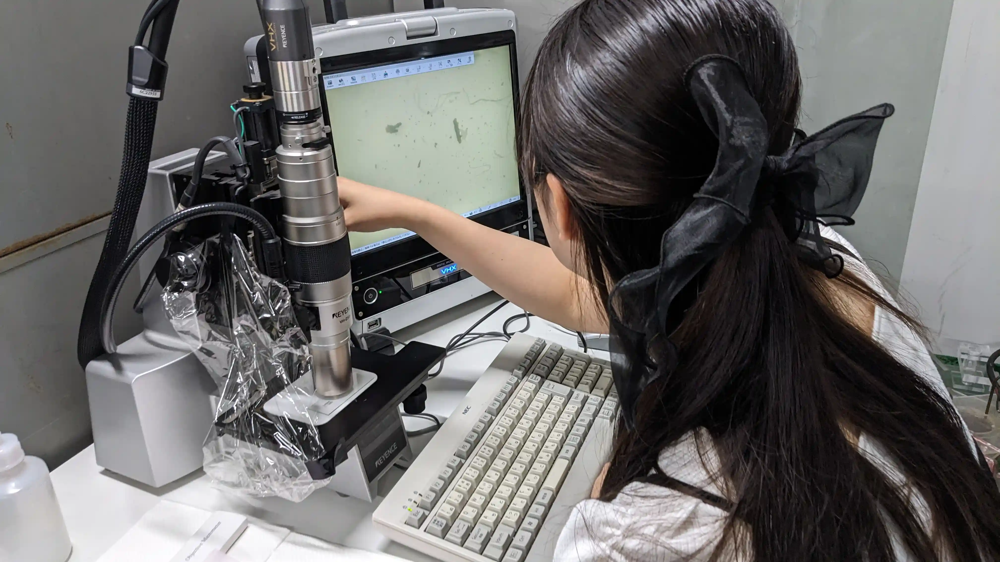
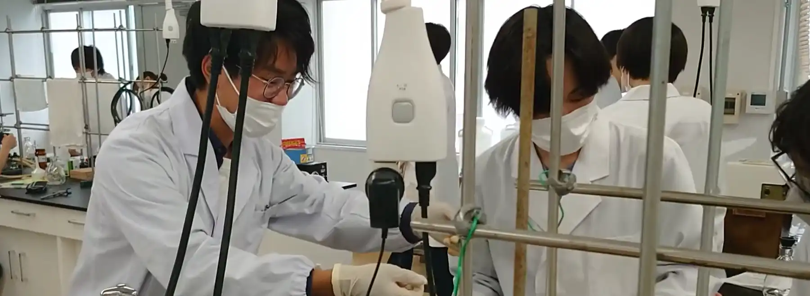
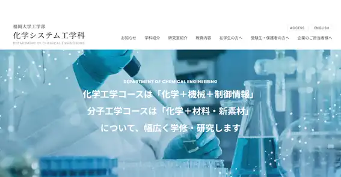

化学システム工学科
新素材から
環境装置
までの
幅広い分野の
研究開発
・生産技術に
求められる
化学技術者へ。
化学システム工学科では、分子工学の基礎となる「化学」の学習に始まり、「ものづくり」の現場で必要とされる化学工学を学ぶことにより、幅広い分野・業種で活躍できる化学技術者を育成しています。実験や演習を中心とした学科カリキュラムは企業の注目を集め、卒業生は多様な業界で活躍しています。2年次進級時に、学生の特性に対応したコース選択制度を実施。工学部の学科の中でも女子学生の割合が高い学科です。

Keywords
#
化粧品
#
エネルギー
問題
・地球環境問題
#
化学技術者
#
食品
・生命科学
#
ロケット
#
薬品
#
プログラム
#
燃料電池
#
カーボン
ニュートラル
化学システム工学科での
4年間
就職情報
2020年度から2022年度の主な就職先
製造業
旭化成
三菱ケミカル
京セラ
日産自動車(株)
凸版印刷
東ソー
東亜合成
三井ハイテテック
日鉄
ケミカル
＆
マテリアル
日本化薬
日清製粉
カゴメ
建設業
九電工
西日本
プラント
工業
三菱
ケミカル
エンジニアリング
電気・ガス・熱供給・水道業
九州電力
情報通信業
富士通
卸売業、小売業
横河
ソリューション
サービス
学術研究、専門・技術サービス業
西部ガス
ホールディングス
東ソー
分析
センター

求める人材像
(求める能力)
知識・理解
高等学校の教育内容を幅広く学修し、工学を学ぶに十分な基礎学力を有している人
技能
学習や課外活動から得た経験を踏まえて、自らの視点で物事を順序立てて説明することができる人
態度・志向性
化学や化学工学に関する専門知識と倫理観を身に付けた化学技術者や環境技術者を目指す人
能力・資質
英語の資格を取得した人、課外活動（体育・文化・ボランティア）で顕著な成果を収めた人
個別サイト

個別サイトを見る
個別サイトを見る